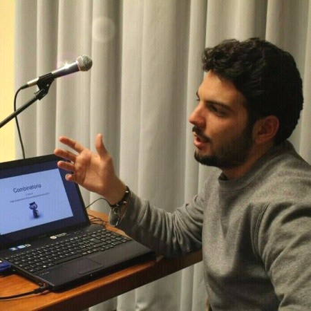

Contacts
+39 3331922377
vinc.delzoppo@live.it
www.linkedin.com/in/vincenzodelzoppo
Main Field of Expertise
Machine Learning, Computer Vision
Python C C++ C# Matlab JavaScript
Artificial Intelligence, AI
Languages
Italian (Native)
English (C2)
French (Full Professional)
Honors-Awards
Excellence University Scholarship in Physics
at "Scuola Superiore di Catania"
National 13° place at
"Excellence Math Scholarship INDAM 2009"
National BRONZE medal at
"Olimpiadi Della Matematica Italiane" 2009
National Merit medal at
"Olimpiadi Della Fisica Italiane" 2009
National Merit medal at
"Olimpiadi Della Matematica Italiane" 2008
National Merit medal at
"Olimpiadi Della Matematica Italiane" 2007
Publications
A data volume reduction strategy
based on on-board Doppler filtering
Machine Learning-based Voice Assessment
for the Detection of Positive
and Recovered COVID-19
Patients
Joint effects of on-board
Doppler filtering and quantization
in spaceborne SAR systems
On-Board Doppler Filtering
for Data Volume Reduction
in Spaceborne SAR Systems
Education
Scuola Superiore di Catania
Computational Physics · (2009 - 2012)
Università di Catania
Physics · (2009)
Liceo Scientifico F.Sbordone Napoli (NA)
High School Diploma (Computer Science Project) · (2004 - 2009)
Vincenzo Del Zoppo
Computer Vision & Deep Learning Data Scientist
Job Experience
Senior AI Performance Engineer at State Street
[2022 - Present] - Austin, Texas, United States
My role was to maintain and improve the performance of an AI platform for document processing, mostly
focusing on the extraction of tabular data.
Documents were given from clients in the most various
formats and the task was to automatize extraction covering the majority of cases to minimize the validation
effort from data entry units.
The majority of the effort was to ensure the extraction in case of weird
table formats, misspellings, OCR mistakes, abbreviations, tables without headers or following to the next
pages, poorly scanned documents, etc...
Senior Data Scientist at Cartrack Asia Pacific
[2020 - 2022] - Singapore
I'm currently leading and improving all the company's
Computer Vision and Deep Learning solutions following the entire product pipeline from the POCs to the final
deployable models on the boards.
We are currently working on Driver/in-cabin monitoring, as well as
ADAS systems algorithms.
Aggregating multiple video sources and generating our datasets, allow us
to monitor the status of the driver and the passengers and track surrounding vehicles, on embedded boards
with restrictive computational robustness and compatibility constraints, and low-cost
hardware like CEVA, AmLogic, RockChip, Xilinx, and other cheap platforms.
We are working on data
collection, Semi-supervised labeling, data cleaning, Multi-Task Learning, Neural Architecture Search, custom
losses, network surgery, pruning, regularization, fine-tuning, Quantization Aware Training, Transfer
Learning, and Semi-supervised Learning.
We are using Keras, Tensorflow, Caffe, PyTorch, ONNX, NumPy,
Pandas, for design and C++, OpenCV for deployment.
Video Processing Data Scientist at Tattile srl
[2018 - 2020] - Brescia, Italy
As a DSP engineer and AI data scientist, my role consisted in exploring RGB/ IR camera firmware and embedded
software improvements.
I worked on ALPR cameras, boosting performances and accuracy tradeoffs, using
robust real-time DSP algorithms, and improving Deep Learning architectures.
Fast and robust FPGA
solutions allowed us to perform real-time on embedded platforms with extremely restrictive computational
constraints, and low-cost hardware. I'm constantly using Neural Architecture Search,
optimization, regularization, pruning, fine-tuning, quantization, Unsupervised Learning, Transfer Learning,
and Generative Networks.
Artificial Intelligence & Data Processing Engineer at Leonardo
[2017 - 2018] - Catania, Italy
Research and development on fast distributed algorithms for real-time, multiple-object tracking embedded on
multiple-camera autonomous surveillance systems, including automatic camera calibration, vehicle and
pedestrian tracking, classification, and further elaboration such as traffic monitoring and security
systems.
Other minor projects involved the processing of different data sources such as GPS, Radars, and
other sensors' time-series data.
I'm using Python, OpenCV, scikit_learn, CNTK, GeoPandas, Keras, R,
Tensorflow for prototyping demos for clients.
Computer Vision Research Engineer at Tabex Vision Technologies
[2016 - 2017] - San Francisco Bay Area, United States
Research and development of AI algorithms for image classification, document processing, segmentation and
tables/charts/graphs data extraction.
I was responsible for the whole process from the Python
prototyping to the developing of demos for clients and agile deployment of Web API and REST Services on
AWS.
Make profiling and quality performance tests of our software.
Comparing them to the most
relevant competitors to decide and plan the next research steps and product improvements in short
term.
Research Fellow in Image Processing at DLR (German Aerospace Center)
[2013 - 2014] - Munich, Germany
Future HRWS SAR images will provide fast time series of relief models of the globe to monitor Earth's surface
evolution, improving research in the biosphere, lithosphere, and hydrosphere dynamics.
Such a huge amount of
data will need an on-board pre-processing to reduce downlinking data volume. My role consisted in
researching embedded-optimized solutions joining the implementation of interpolation for Staggered SAR
signal resampling with lowpass FIR filtering, evaluating optimal compromises between data accuracy and
computational costs of the signal processing.
Junior Software Developer at HypoVereinsbank - UniCredit Bank AG
[2012 - 2013] - Munich Germany
Development and Maintenance of C++ / SQL libraries for the LimeX project (an extension of Sophis the main database of the HypoVereinsBank). We worked at LimeX as a little developers team. The aim of the project is to create a library for data mining and reordering items in trade-dependencies trees helping Business Analysts in the evaluation of Trade risks.